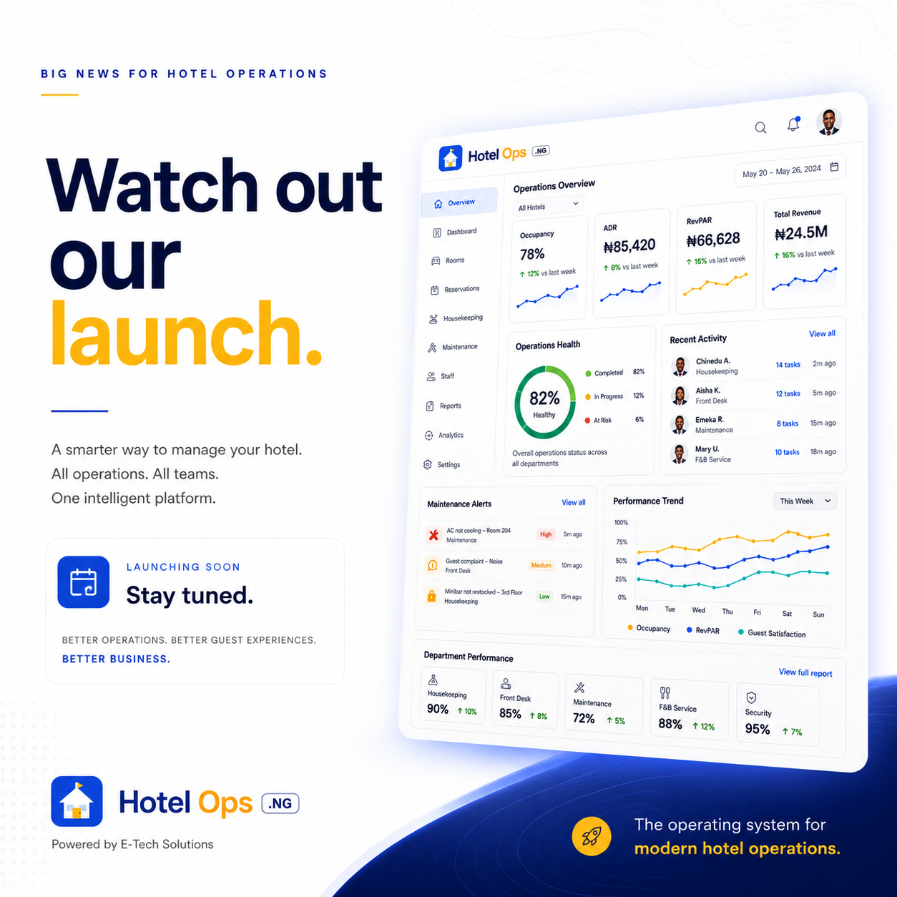

Featured project / Hospitality operations
HotelOps.ng
Clearer operations. More accountable teams.
Bringing tasks, issue reporting, and property oversight into one place so hotel teams can coordinate daily work.
My roleProduct strategy & delivery
- Task ownership
- Issue tracking
- Multi-property support